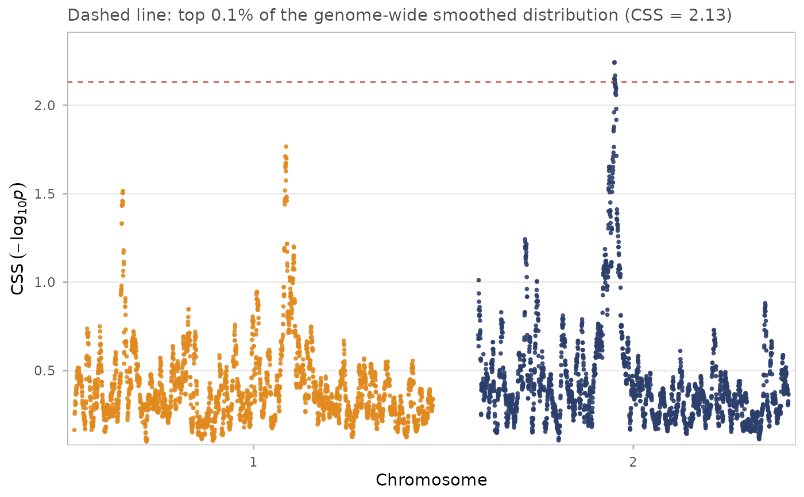

Genome-wide Manhattan plot of composite selection signals
Source:R/plot-manhattan.R
css_manhattan.RdReproduces the layout of Figure 3 of Randhawa et al. (2014): CSS against genomic position, chromosomes in alternating colours, with the empirical significance threshold drawn as a dashed line.
Usage
css_manhattan(
x,
score = c("smoothed", "raw"),
overlay_raw = FALSE,
regions = NULL,
label = NULL,
thin = FALSE,
thin_below = 1,
thin_frac = 0.1,
gap = 2e+07,
point_size = 0.7,
point_alpha = 0.85,
title = NULL,
subtitle = NULL
)Arguments
- x
A
css_result. Ifcss_threshold()has been run the threshold line is drawn automatically.- score
Which score to plot:
"smoothed"(default when available) or"raw".- overlay_raw
Draw the raw per-SNP scores behind the smoothed line, as in Figure 1 of the 2014 paper. Only meaningful when
score = "smoothed".- regions
Optional
css_regionsobject; significant regions are highlighted and, iflabelis set, annotated.- label
Optional column name in
regionsto use as a text label, for example a gene name column the user has added.- thin
Drop a random subset of points below
thin_belowto keep rendering fast on very dense data. Off by default so that nothing is hidden without the user asking.- thin_below
CSS value under which thinning applies. Default
1.- thin_frac
Fraction of low points to keep when thinning. Default
0.1.- gap
Gap between chromosomes in base pairs, passed to
css_genome_coords().- point_size, point_alpha
Point aesthetics.
- title, subtitle
Plot labels.
Value
A ggplot2::ggplot object.
Examples
data(css_sim_small)
res <- css(css_input(css_sim_small,
tests = c(fst = "high", xpehh = "high", ddaf = "high")))
res <- css_threshold(css_smooth(res))
#> Threshold on smoothed CSS: top 0.1% at 2.1320 (6 SNPs), top 1.0% at 1.5565 (56 SNPs).
css_manhattan(res)
